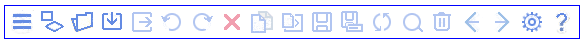
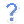
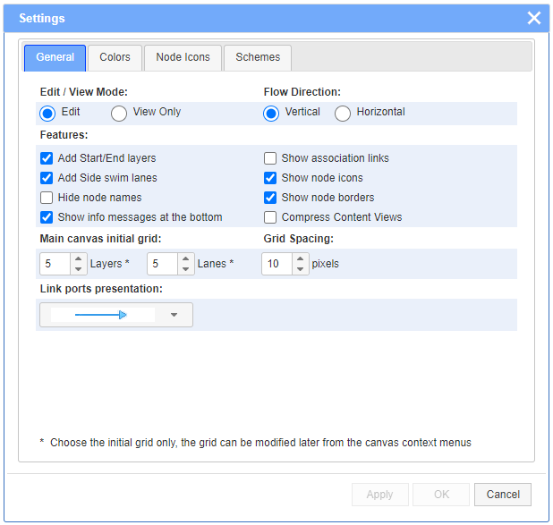
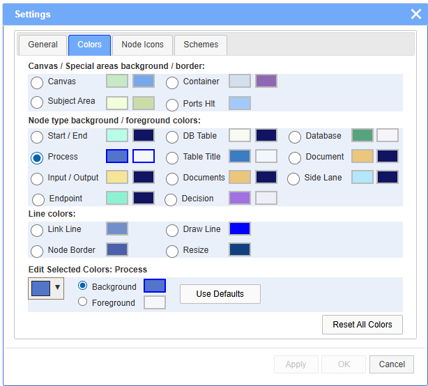
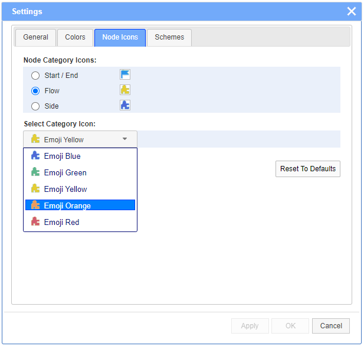
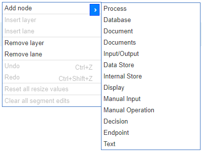
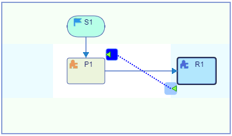

JDElite Flowchart Builder offers design and modeling solutions for a wide variety of use cases:
- Quickly and effortlessly create flowcharts for plan drafting, documenting, monitoring and management, visual modeling, or algorithm presentation.
- Design your flowcharts or entity-relationship diagrams with our exclusive patented readability features, including control of multiple links without overlapping. No coding required.
- The plugin architecture allows users to import/edit/export third party flowcharts. Generated output is in JSON format.
Select a topic in the left pane to review the corresponding video clips and pictures.
This section demonstrates the features of JDElite Flowchart Builder using short video clips. The free demo version has all of the built-in features, the only difference from the full version being that there is no access to the file system. You can create your own flowcharts but in order to save/reopen them you need the additional server module. There are five built-in sample flowcharts. They can be opened and edited but modifications cannot be saved.
You can build a flowchart by simply drag-and-drop nodes from the palette and by dragging links between the nodes, connecting the pop-up handles with the mouse. The flow direction can be either top to bottom or left to right and can be switched back and forth at any time during the design process.
Nodes are assigned names at node creation time. Names have to be unique across the flowchart. The names are either automatically generated or you can choose to enter your choice. Duplicate names are rejected. At Later time you can change the nodes properties like background/foreground/border colors or sizes either collectively from the global Settings dialog or individually for any particular node from its Properties dialog.
From the node’s Properties dialog, you can edit the selected node: show/hide or change the node name, select a node icon, show/hide the icon, edit the background/foreground colors, and enter text inside or outside, above and/or below the node. This dialog is invoked from the node right-click context menu or by double clicking on the node.
The nodes are positioned on a rectangular grid that consists of layers across the flow direction and lanes along the flow direction, and are allocated in the cells at the intersections. The areas between the layers are called layer pipes, and the areas between the lanes are called lane pipes. The connection links are traced along these pipes. The nodes can be moved to different grid cells, as well as copied and pasted. The link ports, in order to reassign them, can be moved to different nodes by dragging the mouse between the connection ports.
You can decide whether to use the side swim lanes or not. If you have selected a vertical flow direction, they appear on the left and on the right. If you have selected a horizontal flow direction, they appear at the top and at the bottom. You can choose to enable the association links to show relations between nodes. You can also select different color styles for the node icons. You can add or remove layers and/or lanes from the right-click context menus outside of nodes and links.
You can attach labels to the connection ports of the nodes inside the Connectivity tab in the node Properties dialog. You can also attach labels to the links or change their colors from the link Properties dialog that can be invoked from the link right-click context menu or by double clicking on the link.
The sizes of the nodes can be changed either collectively from the Node Size tab on the Settings dialog, or individually within the flowchart by dragging the node outline with the mouse. For flowcharts that are larger than the browser window there is a convenient Thumbnail View dialog invokable from a button in the top right block above the palette. You can also change the flow direction by double clicking the arrow button in that block, as well as you can select a different scale for the flowchart.
Container blocks with two levels of nesting allow the user to create functional groups of nodes. After the initial drop, as well as at any time later, a block can be expanded or collapsed by clicking on the expand/collapse icon on the upper rim of the block. The block can be sized to the desired dimensions by extending or shrinking it in any direction using the resize menu that pops up at the upper left corner of the outline in expanded state. If there is not enough free space around the block to expand it, additional layers and/or lanes are to be inserted.
The Thumbnail View described above may help to navigate large flowcharts that expand beyond the viewable area. Additionally, there is a Search tool that allows finding a single node or multiple nodes by full/partial name, or by matching text/pattern in the node content text.
JDElite allows editing the flowcharts by manually modifying the layout.
One of the important features of JDElite Flowchart Builder are the task hooks. Currently there are four types of task hooks that demonstrate this customizable feature: actions, services, operations and expressions. These hooks can be further attached to a business processing environment, in areas like design of flowchart diagrams for business process modeling (BPM) editors.
Another important feature of JDElite Flowchart Builder is that it can be used for the design of flowcharts, representing relational database models and structures - entity relationship diagrams (ERD).
Adding a table:
Adding relationships:
Following is a brief list of the wide range of features, accessible from the toolbar, from the context menus, or by simply using the mouse. Most of the actions accessible from the top toolbar buttons can also be invoked from the hamburger drop-down menu in the upper left corner:

The following actions are initiated as follows:
 - Create new flowchart: the new
file name can contain only alphanumeric characters, dots, dashes, and underscores.
- Create new flowchart: the new
file name can contain only alphanumeric characters, dots, dashes, and underscores.
 - Open the file system browser (see
the menu entry below).
- Open the file system browser (see
the menu entry below).
 - Import preselected formats.
- Import preselected formats.
- Undo the latest action.
- Redo the latest action that has been undone.
 - Delete the selected individual element,
or a whole group.
- Delete the selected individual element,
or a whole group.
 - Copy yhe selected element or the group.
- Copy yhe selected element or the group.
 - Paste the selected element or group
to a location pointed by the mouse.
- Paste the selected element or group
to a location pointed by the mouse.
- Save the flowchart (enabled if there are any changes from the last save action).
 - Save the flowchart as a new copy
(always enabled).
- Save the flowchart as a new copy
(always enabled).
 - Refresh the flowchart and reset the scaling,
if any.
- Refresh the flowchart and reset the scaling,
if any.
- Open the Search dialog.
 - Clear the canvas without saving current changes,
if any.
- Clear the canvas without saving current changes,
if any.
- Navigate to the previous flowchart, if such is available and ask to save current changes.
 - Navigate to the next flowchart,
if such is available and ask to save current changes.
- Navigate to the next flowchart,
if such is available and ask to save current changes.
- Open the Settings dialog.
 - Open the drop down help menu.
The editor actions are undoable through an unlimited number of Undo/Redo< steps.
The data flow direction can be initially selected to be either top to bottom or left to right, and can be changed or switched back and forth at any time by double clicking the arrow button in the block above the palette, or from the Settings dialog. The flowchart is rotated and flipped which does not otherwise affect its content. The flipping preserves the correlation between the flowchart internal directions and the canvas coordinate system:
vertical:
horizontal:

The General tab of Settings dialog offers several different selection modes. Most of them can be changed at any time during the flowchart design without affecting the previous work:

The Node Size tab of Settings dialog allows to select or modify globally the sizes of groups of nodes:
The Colors tab of Settings dialog allows to select the background and/or foreground colors, as well as borders, of particular node types. The selections are saved in the output JSON file, from where the values are read when the next time the file is open:

The Node Icons tab of Settings dialog allows to select several images to be displayed as nodes icons. In a future release the image selections will be provided from icons configuration file(s):

The Schemes tab of Settings dialog allows to save the color selections in a local configuration file for further reuse:

The editor has a proprietary file system browser that is invokable when a server connection is available. It has full access to the file system for easy navigation. The created flowcharts, in JSON format, can be saved in existing folders or in newly created ones. Files and folders can be renamed or removed as well. The default server connection uses node.js
.A new node is created either by dragging an item from the palette on the right of the screen to an accepting cell on the canvas, or by positioning the mouse on an empty cell and selecting a node type from the context menu. The menu shows only nodes that are accepted at this location:

The start and end layers, as well as the left and right swim lanes, are optional. They all accept their specific node types from the palette or from the mouse context menus.
The flowchart frame size can be modified from the context menus at any time by inserting new layers or lanes, and/or removing the unused ones:

The connections between the nodes are created by dragging the mouse between the connection handles that pop up on the outlines of the accepting nodes under the mouse pointer. The connection is routed after the mouse pointer is dropped over an accepting handle when the handle is selected. Later on, a connection can be reassigned by dragging any port of the link to another accepting handle on a different node:
In addition to the standard link connections, there is also another kind: association links. They can only be traced sidewise between the nodes, and are represented by dashed lines:

The Decision node has two outputs: ‘YES’ and ‘NO’, and it accepts multiple inputs. The configuration of the decision outputs can be edited from the Configure... dialog, which is accessed from the context menu on the decision nodes and offers six different options:
Large flowcharts may expands beyond the browser window size. You can scroll a flowchart either by dragging the mouse inside the canvas or by using the Thumbnail View.